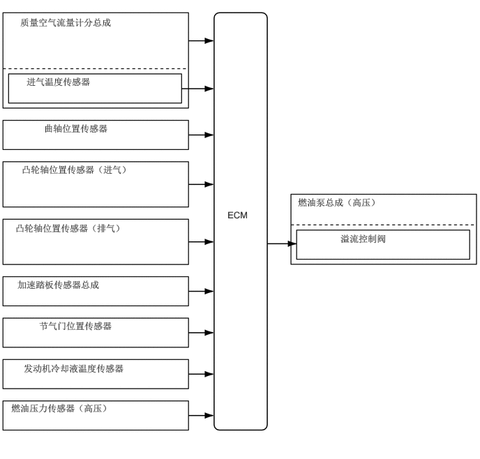

0.302,0.25 2.531,0.479
2.219,0.219
10
false
质量空气流量计分总成
0.396,1.135 2.281,1.339
1.875,0.193
10
false
进气温度传感器
0.656,1.833 2.073,2.037
1.406,0.193
10
false
曲轴位置传感器
0.323,2.448 2.479,2.854
2.146,0.396
10
false
凸轮轴位置传感器（进气）
0.229,3.323 2.51,3.604
2.271,0.271
10
false
凸轮轴位置传感器（排气）
0.26,4.167 2.521,4.375
2.25,0.198
10
false
加速踏板传感器总成
0.583,4.781 2.125,4.985
1.531,0.193
10
false
节气门位置传感器
0.354,5.417 2.604,5.635
2.24,0.208
10
false
发动机冷却液温度传感器
0.167,6.01 2.75,6.25
2.573,0.229
10
false
燃油压力传感器（高压）
3.396,3.125 3.781,3.333
0.375,0.198
10
false
ECM
4.448,2.938 7.021,3.146
2.563,0.198
10
false
燃油泵总成（高压）
5.083,3.479 6.302,3.683
1.208,0.193
10
false
溢流控制阀